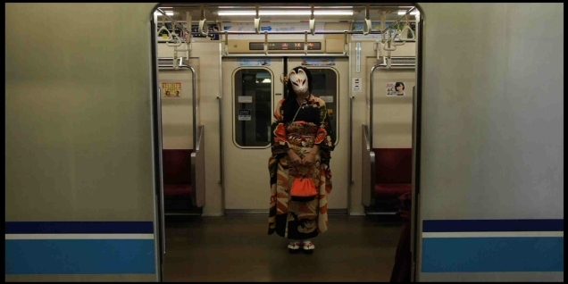

| God for Japanese Cool Girls (Jp) (The BBB: Breakthrough Bandwagon Books) | |
| 桜井亜美 | |
| The BBB: Breakthrough Bandwagon Books (2016) | |
Told by Ami Sakurai
Interviewed by Ryusui Seiryoin
Cover Photograph by Ami Sakurai
Cover Design by Tanya
C opyright © 2016 Ami Sakurai / The BBB : Breakthrough Bandwagon Books
All rights reserved.
ISBN: 978-1-365-06092-2
『 Girl recruits her God 』 について、 イアン・コンドリィ 氏 （マサチューセッツ工科大学教授）からの推薦コメントをご紹介します。
「 スリリング！衝撃的！そして、面白い！
援助交際をテーマにした新時代の小説が、ついに登場した。
この作品では、まったく新しいタイプの " カワイイ殺し屋 " が描かれている。
最高に楽しめる作品だ」
コンドリィ氏は、 2013 年に 著書 『 THE SOUL OF ANIME 』を発表。
また、 日本のアニメやコミックだけでなく、日本のヒップホップや文学にも造詣が深いことで知られています。

The BBB 編集長（以下、 B ） : 本日は、このたび The BBB から刊行させていただく『 Girl recruits her God 』という作品について、著者の桜井亜美さんのお話を伺います。 桜井さん、よろしくお願いいたします。
桜井 : よろしくお願いします。
B: 『 Girl recr u its her God 』 のオリジナル版『ガール』が日本で刊行されたのは 、 1997 年です よ ね。なぜこれを今、英語に翻訳し、 ご自身で 映画化 され ようと思われたのですか？
桜井 : 私の作品の中で 、 どうしても英語に翻訳したい作品が 、 いくつかあります。 デビュー作の 『 innocent world 』 は 2004 年に翻訳され、アメリカをはじめイタリア、ロシア、中国、韓国など世界中で販売され ました。 監督は私ではありませんが、商業映画にもなりました 。
B: それは、 青春映画だったんです よ ね 。
桜井 : はい 。 続く ２作目の『ガール』 も、ずっと英訳したいと思っていました。 映画 化したい作品の中でも、 もっともプライオリティの高い作品として、長年温めていた企画 です。英語 に翻訳したい作品は、 映画化したい作品ともリンクしています。『ガール』 はどうし ても自分の手で脚本を書き 、ディレクョンしたいと考え ていたんです。その２つを同時にやったのが今回のプロジェクトです 。
B: " 英語に翻訳したい作品 " と " 映画化したい作品 " は 同じ、ということですか ？
桜井 : そうです。私の考える映画の脚本に必要な要素は、ゼロからひとつの世界観を構築する強烈なイメージなんです 。それがある作品は、世界中の人々にも受 け 入れ られ やすいと考えています 。
B: 『 innocent world 』に続いて、本作でも 女子高生がヒロインですね。桜井さんにとって女子高生というのは、どんな存在なんですか ？
桜井 : 日本ではすべての世代の中で、高校生 の女の子がもっとも関心を集めます。作家、監督、ミュージシャン...... 何をするにしても、何になるにしても、 「女子高生」がそれをした、ということに大きな価値が生まれる。彼女達はその特権を制服という匿名性のもとにうまく使って、匿名性から脱 却しようとする。私にとって一番面白くエキサイティングな存在です 。
B: この小説で、ヒロインは、いわゆるテレクラ（テレフォン・デーティング・クラブ） で「獲物」を探し、性的サービスとひきかえに相手の弱みにつけこんで脅したりゆすったり、というアンモラルな「狩り」をしますね。それも特権の利用ですか ？
桜井 : そうです。 97 年ごろの女子高生をめぐる一種異様な熱気の中で、一部のアグレッシブな女の子たちは特権を利用して援助交際という「狩り」をしていました。なかには女の 子の言い値で大金を渡したり、貯金をくずしてまで貢ぐ男もいました 。
B: 日本ではバブル経済の余韻がまだ残っていた時代ですよね 。
桜井 : はい。その「狩り」をする子たちをもっとも極端な形にしたのがユーリです。あのころ、女子高生でありさえすれば、 30 歳の OL や 40 歳の主婦が同じことをするよりはるかに簡単に万札が手に入りました 。
B: そ うした女子高生の特別なポジションは日本だけのもの でしょうか？
桜井 : もちろん 、どの国でも若くて綺麗 な子は好まれます。でも日本では制服が彼女たちに、特別な記号性を与えます。他の国の高校生は、ほとんど制服などありません。 17 歳の女の子がデニムと T シャツ姿な ら、記号性 は失われ、彼女達は単なるティーンエイ ジャーになります 。
B: だか らこの小説のユーリは映画でずっと、セーラー服を着ているのですね 。
桜井 : そうです。セーラー服こそ、社会でサバイバルするための、最強の戦闘服です。 クエンティン・ タラン ティーノ 監督 の『キル ・ ビル Vol.1 』でも、栗山千明 さん の演じた女子高生の殺し屋 " GOGO 夕張 " が制服を着ていました。
B: 渋谷を歩いている女子高生たちも制服だか らこそ注目され、カメラを向けられるのだとよく分かっていますよね 。
桜井 : 彼女達 の価値観もまた、スペシャルです。もっともプライオリティが高いのは、 " kawaii " 。カワイイには 、 綺麗、かっこいい、今っぽい、愛くるしい、ピュア、善良、など 、 すべてプラスの評価がこめられています。モラルとか社会的 な意義を超越した言葉ですが、直感的に「正しさ」を言い当てている 。
B: 彼女達にとっては、 kawaii 状態に なることが ベストプライオリティなのでしょうね。
桜井 : 交流する相手にも、社会にも、服やライフスタイルにも、すべてにかわいさを求めます。それはつまり母性原理の正しさが通る世界、ということです。母性の正しさは、周りに愛され、大事にされることです。だから消耗品としての完成度では なく、独自の美しさ、愛らしさをそなえた唯一無二のものを求めます 。
B: つまり 、 女子高生を突き動かしているのは母性原理、ということですか ？
桜井 : 日本社会の中枢は、いまだに消耗品としての完成度を追求する 父性原理で動いている。それを揺り戻すという意味が大きいです。
B: それは日本だけではないですよね ?
桜井 : はい、多くの国がそうです。で も日本ほど男性原理と女性原理が大きく分離していて、共に 溶け合おう とはしない国は珍しい。 ですからティーンエージャーの女の子たちは本能的に、自分た ちが手にできるアイデンティファイの方法として論理ではなく kawaii を選ぶ。 消耗品としての完成とは真逆に、唯一無二の存在になりたいのです。
B: 確かに 、 制服は秩序や序列という男性社会的なものですね。 だから日本の男性はあんなにも制服に性的な反応をする。ティーンエイ ジャーの女の子 を自分たちの秩序に位置づけられる、という安心感があるんでしょう 。
桜井 : 女子高生にとって、 kawaii は彼女達の自立心であり、自我の芽でもあるんです。これは世界 的にも珍しい価値観の意識構造です。だからこそ、欧米のティーンエ イ ジャーにも日本の女の子カルチャーは、好奇心と憧れの対象なんです 。
B: こうしてみると、女子高生というのは日本の社会の構造を自分自身で見事に体現し 、それを乗り越えようとしている存在なんですね。とても刺激的です。
桜井 : そうです。だからこ そ、私は女子高生を題材に小説を書くことに、大きな意味を感じます 。
B: 『 Girl recruits her God 』 の映画では主人公の女子高生が神を求め ますが、彼女達に宗教的な意識というのはあるんでしょうか ?
桜井 : キリスト教でも仏教でもなく、そのどれでもある汎神論のような宗教観なのだと思います。たとえばキティちゃんのヌイグルミに神への信仰に近い感情を 持ったり、憧れているアイドルやアニメの主人公を神、と見なしたり 。
B: もしくは自分を救ってくれる人、見出してくれる人が神 ...... とか。この小説ではネットの掲示板で自分を全 能者と思いたい男と出会い、それが予想外の方向へ進んでいきますね。
桜井 : 主人公ユーリは心の中でいつも、彼女にとっての本物の神を待っている。それがいったい何なのか、というのがひとつのテーマでもあります。そ れを見抜いてもらえたら、とても面白いもう一つの読み方がで き ますよ 。
B: そして著者自身が脚本・監督を担当して映画を撮影したわけですが、それがとても楽しみです。公開はいつなのでしょうか ？
桜井 : 『 Girl recruits her God 』の上下巻をまとめた合本 が発売される６月を予定しています。とても刺激的なエンターテイメントでありながら、最後に深く 考えさせる結末となっているので、小説とあわせて楽しんでください 。
B: もう撮影は終ったのですか ？
桜井 : はい。すべて終了し、役者達の演技にも映像にも大きな手応えを感じています。これは世界中、どの国の人が見ても理解できる共通のカタルシスを持った神話的構造の物語です。日本の女子高生が主人公の神話は、かつてつくられた ことがありません。すべての国の人に......特に女性に見て欲しい です 。
B: 作家自身が監督をすることの 意味は大きいですね。小説、映画と同時に進行するワールドワイドな『 Girl recruits her God 』 プロジェクト、日本から発信する新しい潮流を、みなさん、どうか しっかり受けとってください。今日はどうもありがとうございました 。
桜井 : ありがとうございました 。
（ 2016 年 1 月 23 日、東京都内某所で収録）
【このインタビューの動画は（ http://thebbb.net/jp/ebooks/girl-talk.html ） で御覧いただけます】
（このインタビューは The BBB: Breakthrough Bandwagon Books のために語られたオリジナル作品です）